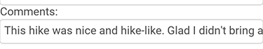
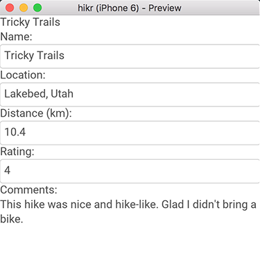

Introduction
In this first part of the tutorial, we're going to start fleshing out the first view of our app; the Edit Hike view. This view will display and allow us to edit the data for a single hike. This means we'll be building both the view, which represents the visual components we'll interact with, and its view model, which represents the editable data that's presented by the view.
The final code for this chapter is available here.
Creating our Project
The first thing we'll do is create our project, and we'll call it "hikr". Just like in the quickstart, this can be done using the Fuse dashboard or the Fuse command like tools. For example:
fuse create app hikr [optional path]
This should create the following directory structure:
$ tree
.
|- MainView.ux
|- hikr.unoproj
These two files are all it takes to build a Fuse app! MainView.ux will contain the UX code for the top-level view of our app, and hikr.unoproj will contain various project settings. Everything we'll be covering in this chapter will happen inside MainView.ux.
If the project was created from the command line, open it in Fuse:
cd hikr
fuse preview
Remember that we can also start previews on our devices, and now's a pretty good time to do so. See our Preview and Export guide for info on how to get those up and running.
Displaying our First Hike
Now that we've got our project and our previews are up and running, it's time to start displaying things and fleshing out our data model. We won't worry about setting up the different pages in our app or anything just yet - that comes later. For now, we'll start by simply displaying some text.
If we open up MainView.ux in a text editor, it should look something like this:
<App>
</App>
As we can see, it's just an empty App tag, representing a clean slate for us to start working on. Also note that in UX, tags are case-sensitive; App is different than app, for example.
Now we'll add a basic Text element:
<App>
<Text>Tricky Trails</Text>
</App>
At this point, we'll save MainView.ux, and immediately, our various previews will update, showing our changes! When working with Fuse, it's recommended to save often, as this can help catch errors and typos immediately, instead of having them pile up and dealing with them later on down the line.
As we can see, Text is used to display a read-only block of text. This is great, but you may have noticed this text is partially covered by the status bar if you're previewing on your device, so we'll go ahead and fix that real quick. To do this, all we have to do is wrap our Text element inside a ClientPanel tag, like so:
<App>
<ClientPanel>
<Text>Tricky Trails</Text>
</ClientPanel>
</App>
A ClientPanel is really just a container that will reserve space at the top and bottom of the screen for various OS-specific visuals, which is perfect in our case.
Before we move on, let's also place our Text element inside a StackPanel. A StackPanel is a sort of container for multiple elements that will stack each of its child elements vertically or horizontally. In our case, we only have one element, so it won't really do anything, but it'll be a good idea to make one now so we don't have to worry about it later. The code to do this is pretty simple:
<App>
<ClientPanel>
<StackPanel>
<Text>Tricky Trails</Text>
</StackPanel>
</ClientPanel>
</App>
View Model and Databinding
Cool! So now we've got some text on the screen, but it's displaying a hardcoded string from UX. Since this view will eventually be used to edit one of our hikes, we'll need this text to be dynamic instead. This is where our view model comes in, which we'll implement in JavaScript. Then, we'll use databinding to tie it all together.
Let's add some inline JavaScript to our app that will just exports a name for our hike:
<App>
<ClientPanel>
<JavaScript>
var name = "Tricky Trails";
module.exports = {
name: name
};
</JavaScript>
<StackPanel>
<Text>Tricky Trails</Text>
</StackPanel>
</ClientPanel>
</App>
Now we've got a value in JS exposed to UX, but we're still displaying the hardcoded string from UX. Let's change the Text element to display our JS variable's value instead:
<Text Value="{name}" />
Great! Now we're displaying the name of one of our hikes. This is an example of one-way databinding, where data flows from JavaScript (our view model) to UX (our view). This is great for displaying data, but we'll want to edit it as well. So let's set that up next.
Observables and Two-Way Databinding
What we're going to do is add a TextBox to our UI. TextBox represents a simple single-line text input field with basic styling, which is perfect for editing name in our case. But first, we'll need to ensure that when our TextBox edits name's value, the rest of the UI can be notified of this change. In other words, we need to make sure that this variable can be observed - and this is what FuseJS' Observable is for.
To see how this works, let's first import FuseJS' Observable module. For that, we'll add the following to the top of our JavaScript code:
var Observable = require("FuseJS/Observable");
Now all we need to do is change our declaration of the name variable, like so:
var name = Observable("Tricky Trails");
Now, name is an Observable instead of a regular variable. This means that any changes to it can be observed by the UI or any other subscribers the Observable has. And when we databind to an Observable, this is exactly what happens - Fuse takes care of all the plumbing necessary to ensure that when an Observable's value is changed, the UI will update accordingly. Awesome!
Of course, now we actually need something that will change this value. So, let's go ahead and add that TextBox we talked about earlier:
<App>
<ClientPanel>
<JavaScript>
var Observable = require("FuseJS/Observable");
var name = Observable("Tricky Trails");
module.exports = {
name: name
};
</JavaScript>
<StackPanel>
<Text Value="{name}" />
<TextBox Value="{name}" />
</StackPanel>
</ClientPanel>
</App>
Now, when we save this, we'll have both a Text and a TextBox element displaying the value of our name Observable. And when we edit the contents of the TextBox, we can see that the Text's value also changes! This is because databinding to TextBox's value property gives us a two-way databinding, which means that not only will the UI update to display incoming values, but it can make changes to these values as well.
And while we're at it, let's add a caption for it as well by simply adding another Text element above it:
<Text>Name:</Text>
<TextBox Value="{name}" />
Looking good!
Adding Additional Fields
Now that we've got an editor working, let's flesh out our view and view model a bit more to include the other fields we're interested in. In particular, we're going to want a hike to have the following fields:
- name (which we've already got covered)
- location
- distance (km)
- rating (1-5)
- comments
To keep things simple in our view model, we're going to keep this data in other Observable's (just like with name) and use TextBox's to edit them. So, let's make these other Observable's first:
var name = Observable("Tricky Trails");
var location = Observable("Lakebed, Utah");
var distance = Observable(10.4);
var rating = Observable(4);
var comments = Observable("This hike was nice and hike-like. Glad I didn't bring a bike.");
And we'll make sure to expose them from our JS module as well:
name: name,
location: location,
distance: distance,
rating: rating,
comments: comments
Then, we'll add a bunch of TextBox's that we'll bind to these Observable's (along with some helpful captions as well):
<Text>Location:</Text>
<TextBox Value="{location}" />
<Text>Distance (km):</Text>
<TextBox Value="{distance}" InputHint="Decimal" />
<Text>Rating:</Text>
<TextBox Value="{rating}" InputHint="Integer" />
<Text>Comments:</Text>
<TextBox Value="{comments}" />
Notice how we've also added InputHints to the TextBox's that will modify numeric data. This is a small improvement that will ensure a more appropriate numeric keyboard will come up when editing these fields on iOS and Android.
Some Finishing Touches
At this point, we should have a fully-working editor for all of our values. Sweet! While we're at it, let's make a couple additional improvements.
In particular, let's take a look at the input field for comments:

As we can see, there's a bit too much text to fit on just this one line. It would be much nicer if this editor showed all of the text and allowed us to insert multiple lines for this field.
The fix for this is super simple - instead of using a TextBox, we'll use a TextView, and ensure its TextWrapping property is set to Wrap, like so:
<Text>Comments:</Text>
<TextView Value="{comments}" TextWrapping="Wrap" />
This gives us exactly what we were after - a multi-line editor with text wrapping displaying all of the text in the field. Of course, it's a bit hard to see, but we'll fix that in a later chapter about styling. For now, let's just continue to focus on blocking out the major parts of our app.
The last thing we'll do is ensure that all of our value editors are accessible, even when they take up a lot of space (for example, when the comments value is quite long). To do this, we'll simply place our StackPanel inside a ScrollView, like so:
<ScrollView>
<StackPanel>
<Text Value="{name}" />
<Text>Name:</Text>
<TextBox Value="{name}" />
<Text>Location:</Text>
<TextBox Value="{location}" />
<Text>Distance (km):</Text>
<TextBox Value="{distance}" InputHint="Decimal" />
<Text>Rating:</Text>
<TextBox Value="{rating}" InputHint="Integer" />
<Text>Comments:</Text>
<TextView Value="{comments}" TextWrapping="Wrap" />
</StackPanel>
</ScrollView>
This will allow us to scroll the form up/down as necessary in order to edit the fields we want. Great!
Our Progress So Far
At this point, we've got a view for displaying/editing the data for a specific hike. It looks something like this:

And here's what our final code should look like:
<App>
<ClientPanel>
<JavaScript>
var Observable = require("FuseJS/Observable");
var name = Observable("Tricky Trails");
var location = Observable("Lakebed, Utah");
var distance = Observable(10.4);
var rating = Observable(4);
var comments = Observable("This hike was nice and hike-like. Glad I didn't bring a bike.");
module.exports = {
name: name,
location: location,
distance: distance,
rating: rating,
comments: comments
};
</JavaScript>
<ScrollView>
<StackPanel>
<Text Value="{name}" />
<Text>Name:</Text>
<TextBox Value="{name}" />
<Text>Location:</Text>
<TextBox Value="{location}" />
<Text>Distance (km):</Text>
<TextBox Value="{distance}" InputHint="Decimal" />
<Text>Rating:</Text>
<TextBox Value="{rating}" InputHint="Integer" />
<Text>Comments:</Text>
<TextView Value="{comments}" TextWrapping="Wrap" />
</StackPanel>
</ScrollView>
</ClientPanel>
</App>
So as we can see, it doesn't take much to get a view like this up and running. And we've already covered a lot of ground, including:
- Creating/previewing/modifying a project
- Using Observables and data binding
- Building a view and view model
What's Next
Of course, this view only displays one hike, and what we're after is a list of hikes we can display/modify. In the next chapter, we'll expand on what we've built so far by introducing multiple hikes and the ability to select one to display and edit. So when you're ready to go, let's dive in!
The final code for this chapter is available here.